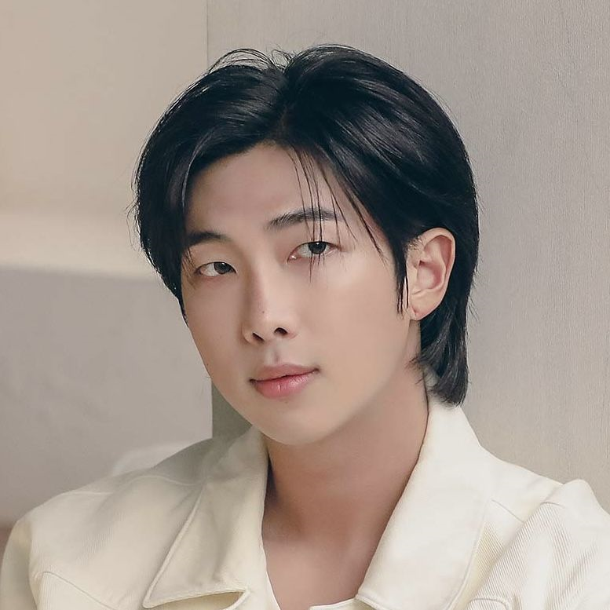
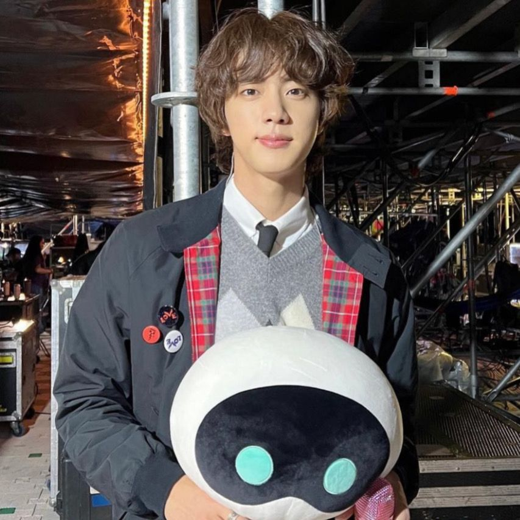
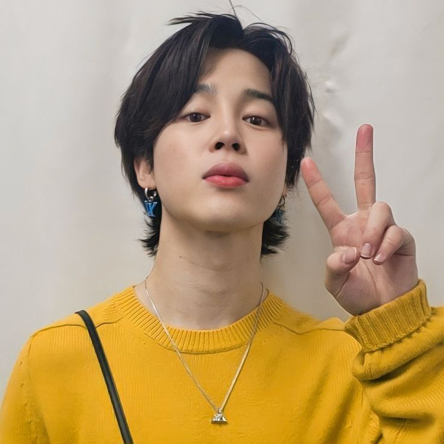
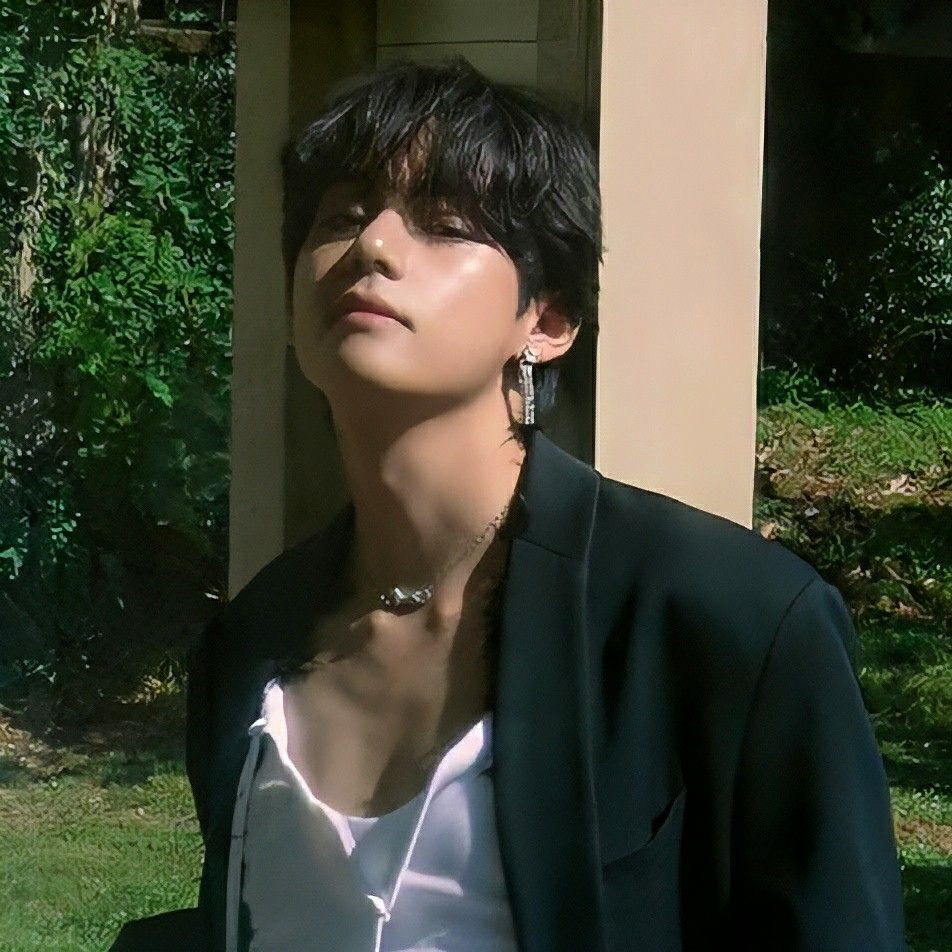

Contenidos:
El nombre del grupo, BTS, es la abreviación de Bangtan Sonyeondan, que significa literalmente “chicos a prueba de balas”. Su origen está en la audiciones que la discográfica Big Hit Entertainment realizó para formar una boy band en 2010. Los primeros elegidos fueron RM y Suga , que desde ese momento se convirtieron en los puntales de la banda. El resto de la alineación sufrió varios cambios durante su andadura inicial, hasta estabilizarse definitivamente en 2012, con Jin , Suga, J-Hope , RM, Jimin , V y Jungkook . El grupo debutó el 13 de junio de 2013 con la canción “No More Dream”
A partir de 2015 empieza a ganar popularidad y a establecer su reputación como un grupo socialmente consciente con sus lanzamientos de la serie “The Most Beautiful Moment in Life Part 1, Part 2”, y el álbum recopilatorio ”The Most Beautiful Moment in Life: Young Forever” , con los que también entra por primera vez en la lista Billboard 200.
Para 2017, BTS empieza a ser reconocido a nivel internacional como el principal promotor de la ola coreana, especialmente en el mercado estadounidense; fue la primera banda coreana en recibir las certificaciones de oro y de platino por parte de la RIAA con los sencillos "DNA" y "MIC Drop" , respectivamente.
Convertidos ya en superestrellas, con la publicación entre 2018 y 2019, de Love Yourself: Tear , Love Yourself: Answer y Map of the Soul: Persona se convirtieron en el segundo grupo, después de The Beatles, en tener tres álbumes número 1 en menos de un año en la Billboard.
En 2018, BTS recibió la Orden al Mérito Cultural, una de las más altas distinciones civiles que otorga el gobierno surcoreano. En septiembre de ese mismo año, fueron invitados a dar un discurso ante la Asamblea General de las Naciones Unidas con motivo de su nombramiento como embajadores por UNICEF y aparecieron en portada de la edición internacional de la revista Time.
En 2020 se anunció su quinto álbum de estudio: BE. En junio de 2022, se anunció un nuevo álbum, Proof, donde echan la vista atrás al conjunto de su carrera. Actualmente se encuentran trabajando en sus proyectos en solitario y preparandose para ir al servicio militar.

Kim Namjoon nació el 12 de septiembre de 1994 en Seúl. Es rapero, compositor y productor.
Namjoon, reconocido como RM y líder del grupo, se interesó en la música, sobre todo en el rap, cuando se encontraba en sexto grado. Al querer aprender más de este género ingresó a la comunidad de raperos Daenamhyup. Su talento permitió que sea convocado para una audición en la que buscaban artistas hip-hop. La presentación que realizó sorprendió al productor Bang Shi Hyuk, quien tomó la decisión de invitarlo a que asista al evento de BigHit. Es así como fue aceptado en la compañía en el año 2010.
A lo largo de su carrera, RM ha compaginado su trabajo con BTS con su carrera como solista. En 2015, lanzó su primer mixtape RM y colaboró con Warren G en el sencillo "Please don’t die" . Seguido colaboró con MFBTY, EE y Dino-J en "Buckubucku" y con Yankie, Dok2, Double, Juvie Train, TopBob y Don Mills en "ProMeTheUs" .
Asimismo, trabajó con Primary y Kwon Jin Ah en el sencillo "U" y con Homme en el sencillo "Dilemma" , tema compuesto por él mismo. Un año después lanzó el tema para los fans, I Know, junto a Jungkook.
Hace realmente poco sacó su álbum en solitario, Indigo. Es un trabajo creado para meditarlo y observarlo como si de un cuadro en una galería de arte se tratara. Conforma un recordatorio y remembranzas de cómo Kim Namjoon se convirtió en RM de BTS, la superestrella que fue criticada en sus inicios por su rap underground y que ahora está en la cima del Olimpo intentando no precipitarse del mismo, tal y como le sucedió a Hefesto.

Kim SeokJin nació el 4 de diciembre de 1992 en Anyang. Es cantante, actor, modelo, presentador, compositor y bailarín.
Seokjin, tuvo su primer acercamiento con la industria del K-pop cuando fue reclutado por SM Entertainment, aunque su vínculo no prosperó, llegó una mejor oportunidad, BH. Su postulación fue para convertirse en un actor, pero los ejecutivos tenían otros planes para él, aunque no tenía experiencia previa en baile y canto. Tras varias conversaciones, le propusieron que sea trainee. Tras formar parte de la comunidad de aspirantes, no pasó mucho tiempo para que sea convocado para el proyecto BTS.
Además de su trabajo con el grupo, Jin ha colaborado en la composición e interpretación del OST de Hwarang, "It’s Definitely You" junto a V. En junio de 2019, Jin lanzó el tema "This Night" , su segunda canción como solista después de "Awake" .
Hace relativamente poco, Jin publicó "The Astronaut" , una canción que es un canto al amor hacia sus fans ante un nuevo inicio en su vida y en la que trabajó junto a Coldplay.
Actualmente, SeokJin se encuentra realizando el servicio militar desde hace casi 3 meses.
Min Yoongi nació el 9 de marzo de 1993 en Daegu. Es rapero, compositor, productor, cantante, modelo y bailarín.
Yoongi, Suga o Agust D, se destacó en la escuela por su esencia artística, sobre todo cuando comenzó a rapear a muy temprana edad. Deseaba aprender más sobre aquello que lo apasionaba, y es así como realizó sus primeros trabajos como productor, explorando nuevos sonidos. Algo que destacó la empresa coreana fue la precisión y dedicación que tenía, y es así como tomaron la decisión de sumarlo al equipo, como cantante y productor musical.
Suga tiene varios trabajos como solista, por ejemplo "Wine" junto a Suran. Este tema le valdría su primer premio fuera del grupo. En 2019, aparecen Map of the Soul: Persona, junto al grupo y sus colaboraciones con Lee So-ra y Epik High, "Song Request" y "Eternal Sunshine" , respectivamente. También colaboró con Halsey, en "SUGA’s Interlude" .
Hace poco Yoongi anunció su tour por Estados Unidos, Singapur, Indonesia, Corea y Japón. Además, recientemente se volvió embajador de la marca Valentino e hizo varias sesiones de fotos como modelo.
Jung Hoseok nació el 18 de febrero de 1994 en Gwangju. Es rapero, compositor, cantante, bailarín, coreógrafo y productor.
Formado como bailarín, poseyendo la técnica y talento, Hoseok o J-Hope, experimentó lo que era una competencia de talentos en un llamado de JYP Entertainment. Este primer paso en lo que quería lograr lo impulsó a que audicionara a la empresa de Bang Si-hyuk. Fue reclutado y aceptado como trainee. Su preparación inicial permitió que destacara en las etapas de evaluación.
En 2018, J-Hope sorprendió a los fans con el lanzamiento de su primer trabajo en solitario, el mixtape Hope World. Este mixtape consta de seis canciones e incluyó hits como "Daydream" y "Airplane" . Tras su lanzamiento, Hope World, encabezó las listas de iTunes de más de 63 países y Daydream se posicionó en el Top Songs Chart de varios países alrededor del mundo.
Hasta Octubre de 2021, es acreditado en la KOMCA (Korea Music Copyright Association) como compositor de 113 canciones, pertenecientes a la discografía de BTS y a sus canciones en solitario.
El 15 de julio de 2022 salió su álbum Jack in the Box, que tiene en su canción principal una referencia al mito griego sobre la caja de Pandora. Hace unos días nada más, sacó su nueva canción "On the street" con J.Cole. También ha sido nombrado embajador de la marca Louis Vuitton.

Park Jimin nació el 13 de octubre de 1995 en Busan. Es cantante, compositor, bailarín y modelo. Fue el último en sumarse al grupo. Mientras acudía a sus clases de baile en la escuela de artes de Busan, un maestro quedó impresionado con su talento innato, y se convirtió en su motivador para que probara suerte en la audición. Tras pasar las primeras evaluaciones, viajó a Seúl, donde comenzó su aventura como aprendiz.
Hasta Octubre 2021, es acreditado como compositor o co-compositor de 10 canciones en la KOMCA, entre ellas: "Boyz with fun" , "Friends" , "In the soop" , "Dis-ease" , "Dream glow" , entre otras.
Jimin posee dos canciones independientes, tituladas: "Promise" y "Christmas love" . Y dentro de la discografía de BTS, posee tres canciones en solitario: "Lie" del álbum Wings, "Serendipity" del álbum Love Yourself: Her y "Filter" del álbum Map Of The Soul: 7. Lie se posicionó en el lugar #3 de la lista World Digital Song Sales de Billboard, mientras Serendipity logró la posición #2, y Filter ha llegado al #1 de la lista. Además, Filter logró posicionarse #87 en el Hot100 de Billboard.
Hace poco se volvió el nuevo embajador de la marca Dior y dentro de poco sacará su proyecto en solitario, el cual es un álbum llamado Face.

Kim Taehyung nació el 30 de diciembre en Daegu. Es cantante, compositor, bailarín, modelo, presentador y actor.
Taehyung o V tuvo un sueño en su infancia, el cual era convertirse en artista. Su historia en BigHit es única, ya que él acompañó a un amigo que deseaba audicionar. Su presencia llamó la atención y le pidieron que también postulara. Tras recibir el permiso de su padre, quien lo animó a que aprendiera a tocar saxo, se presentó frente al jurado y de la temporada, fue el único representante de Daegu.
En 2019, debuta en solitario con "Scenery" , tema que en poco tiempo rompió el record de likes de Souncloud, superando a BTS y otros reconocidos artistas. Ese mismo año, el grupo regresa con Map of the Soul: Persona, trabajo que contaría con la participación de Halsey en la canción "Boy with Luv" .
En navidad, Taehyung reinterpretó la canción "It’s beginning to look a lot like Christmas" de Michael Bubblé, que coincidió con el aniversario del OST "Christmas tree" que el artista estrenó en 2021 para “Our beloved summer”.
Jeon Jungkook nació el 1 de septiembre de 1997 en Busan. Es cantante, bailarín, rapero, compositor y productor. Empezó su carrera en el mundo de la música presentándose al reality Superstar K3 en 2011.
Fue contactado por siete de las compañías más reconocidas de Corea del Sur como: JYP, Cube, FNC, Woollim, Starship y TS. Sin embargo, escogió a Big Hit Entertainment, una compañía pequeña, tras haber escuchado al líder del grupo, RM rapeando.
Desde entonces ha trabajado junto al grupo en la producción y composición de varios temas como: "Love is not over" , "Begin" , "I know" , "Magic Shop" y "Euphoria" , entre otras.
En febrero de 2022, Jungkook cantó la banda sonora de 7fates Chakho, un nuevo webtoon basado en BTS. Su aporte fue "Stay Alive" , y producida por Suga, la canción le valió a Jungkook su primera entrada en solitario en el Billboard Hot 100 con su debut en el número 95.
Una vez el grupo anunció su hiatus como grupo para centrarse en sus proyectos en solitario, Jungkook hizo una colaboración con Charlie Puth que fue publicada el 24 de junio de 2022, "Left And Right" .
El 20 de noviembre, Jungkook subió al escenario en el estadio Al Bayt de Qatar para estrenar su nuevo sencillo "Dreamers" .
P